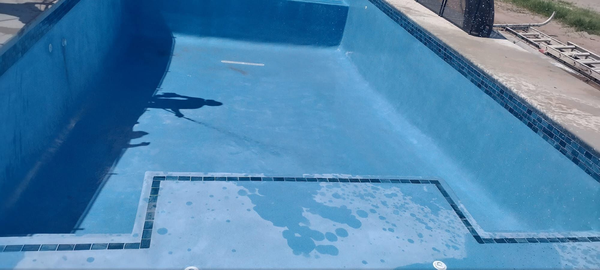
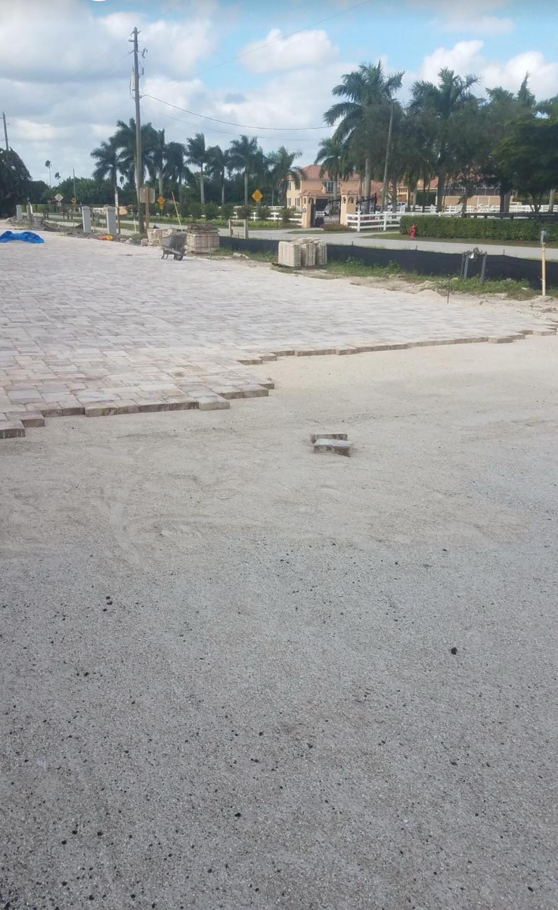
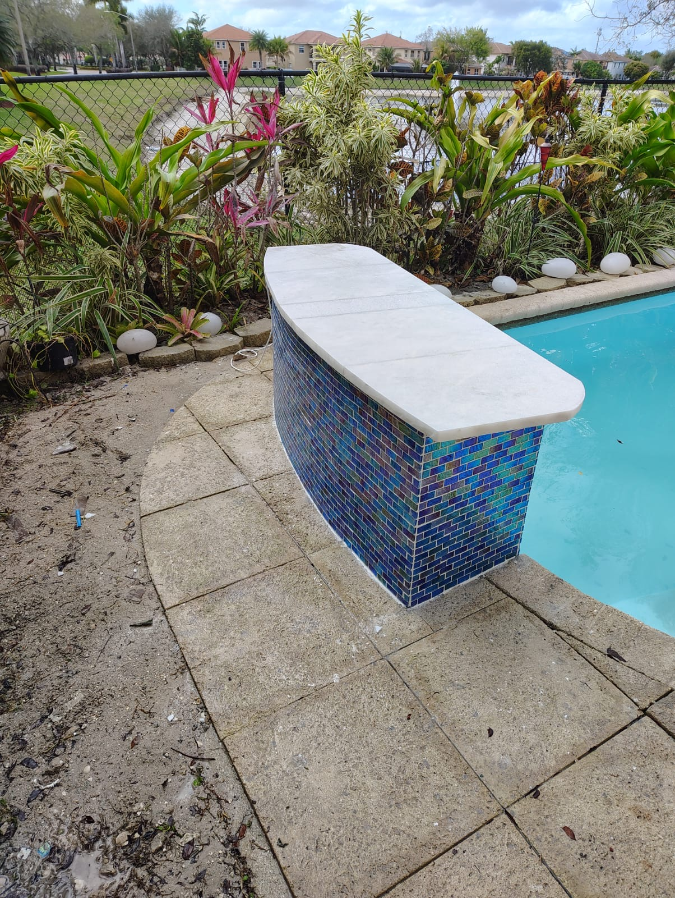
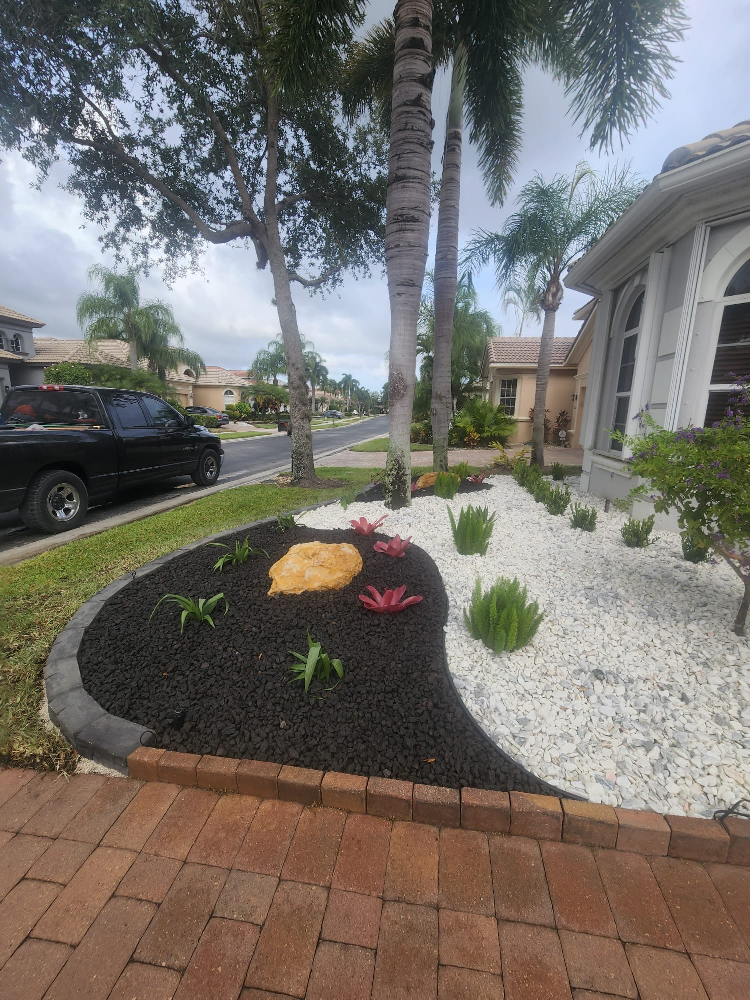
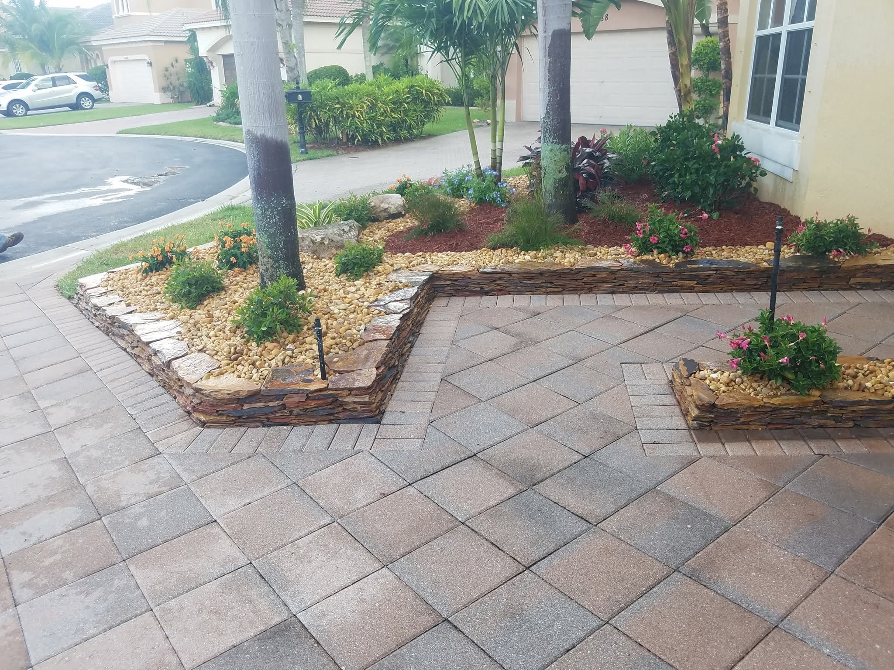

Tips & Stories From Our Team
10 articles to help you make smart decisions about pavers, landscaping, and outdoor living in South Florida.

How to Choose the Right Pavers for Your Driveway in West Palm Beach
Not all pavers are created equal. Learn which material works best in Florida's heat, humidity, and heavy rain — and which one will last the longest on your property.

5 Paver Walkway Designs That Instantly Boost Curb Appeal
Your front walkway is the first thing visitors see. Discover the five most popular paver designs that Palm Beach County homeowners are using to transform their entryways.

Travertine Pavers: The Perfect Choice for Florida Pool Decks
Travertine stays cool underfoot, resists slipping when wet, and looks stunning around pools. Here's why it's become the top choice across Palm Beach County.

The Essential Paver Maintenance Guide for South Florida Homeowners
Florida's climate is tough on outdoor surfaces. Follow this maintenance checklist to keep your pavers looking brand new for years — and protect your investment.

Project Spotlight: Backyard Patio Transformation in Boynton Beach
See how we turned a cracked concrete backyard into a stunning 1,200 sq ft outdoor living space with tumbled brick pavers, a fire pit, and built-in seating.

How Much Does a Paver Driveway Cost in West Palm Beach? (2025)
Thinking about a new paver driveway? Get honest, up-to-date pricing for materials and installation in the West Palm Beach area — no surprises, just real numbers.

Top Landscaping Trends Transforming Palm Beach County Homes in 2025
From drought-resistant native plants to paver-integrated garden designs, discover the landscaping trends that homeowners and designers are loving this year.

Paver Repair vs. Full Replacement: What to Choose and When
Cracked, sunken, or stained pavers don't always mean you need a full replacement. Learn how to assess the damage and make the most cost-effective decision.

The Best Paver Patterns for Driveways and Patios in West Palm Beach
Herringbone? Running bond? Basket weave? The pattern you choose affects both the look and the structural strength of your installation. Here's how to decide.

7 Questions to Ask Before Hiring a Paver Contractor in West Palm Beach
Don't hire the first contractor who gives you a quote. Ask these 7 essential questions to separate the professionals from the fly-by-night operations.

How Florida's Climate Affects Your Pavers (And What to Do About It)
UV exposure, heavy rain, humidity, and salt air are all working against your pavers in South Florida. Here's how to protect your investment year-round.

Travertine vs. Concrete Pavers: Which Is Right for Your West Palm Beach Home?
An honest comparison of the two most popular paver materials in Palm Beach County — cost, durability, heat resistance, and which wins for each project type.

How a Paver Driveway Increases Your Home's Resale Value in South Florida
Data and insights on the ROI of paver driveways in Palm Beach County — what buyers look for and how to maximize your return before listing.

The Complete Guide to Paver Sealing in West Palm Beach
When to seal, which products work best in Florida's climate, how often to reseal, and whether to DIY or hire a professional — everything you need to know.

Before & After: Complete Backyard Transformation in Jupiter, FL
Flooding, cracked concrete, and a dead lawn — see how we turned a neglected Jupiter backyard into a stunning travertine patio and pool area in just 5 days.

Best Native Florida Plants to Pair with Your Paver Patio or Driveway
Five low-maintenance native plants that thrive in Palm Beach County and look stunning alongside pavers — plus expert spacing and placement tips.

Paver Installation Process: What to Expect From Start to Finish
A complete step-by-step walkthrough of how Pavers Ordonez installs a driveway or patio — so you know exactly what's happening and why each step matters.

Pool Deck Pavers: Best Materials for West Palm Beach Pools
Travertine, porcelain, or concrete — which paver material is best for your pool deck in South Florida's heat? A detailed comparison with cost ranges.

Why Polymeric Sand Is the Most Important Part of Your Paver Installation
The jointing material between your pavers determines whether they last 2 years or 20. Here's what polymeric sand is, why it matters, and what happens without it.

Driveway Makeover on a Budget: Smart Paver Options for South Florida Homeowners
You don't need a massive budget to get beautiful pavers. Smart material choices, project phasing, and timing strategies that save real money without cutting corners.